A 43-year-old male patient presents for restaging of known Hodgkin's lymphoma. Which of the following correctly states the stage of disease?
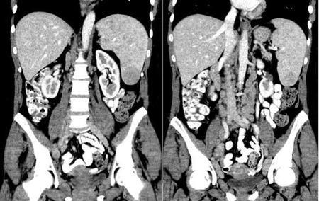
AStage I(2%)
BStage II(9%)
CStage III (1)(18%)
DStage III (2)(44%)
EStage IV(28%)
Your answerD
Correct answerD. Stage III (2)
Explanation
Stage III (2)
The imaging findings above are consistent with a large number of abnormal paraaortic lymph nodes (yellow arrows) as well as lower mediastinal nodes (green arrows). Additionally, the spleen is enlarged with numerous ill-defined masses, some of which are larger and more well-defined (blue arrows).
For a different view outlining mediastinal LAN, click here.
The Lugano staging classification is the lymphoma staging system that is most commonly used in clinical practice currently.
Limited:
stage I: one node or group of adjacent nodes
stage IE: single extra-lymphatic site in the absence of nodal involvement
stage II: two or more nodal groups, same side of the diaphragm
stage IIE: contiguous extra-lymphatic extension from a nodal site with or without the involvement of other lymph node regions on the same side of the diaphragm
Advanced:
stage III: nodes on both sides of the diaphragm; nodes above the diaphragm with spleen involvement
stage III (1): involvement of the spleen or splenic, hilar, celiac, or portal nodes
stage III (2): involvement of the para-aortic, iliac, inguinal, or mesenteric nodes
stage IV: diffuse or disseminated involvement of one or more extranodal organs or tissue beyond that designated E, with or without associated lymph node involvement
All cases to indicate the absence (A) or presence (B) of systemic symptoms (fever/night sweats/unexplained weight loss)
The designation of (E) refers to the extranodal contiguous extension that can still be encompassed within an irradiation field appropriate For nodal disease of the same anatomic extent (if more extensive than that, label as IV)
The designation of (bulky) if a single nodal mass > 10 cm or > 1/3 of transthoracic diameter
Incorrect Answers:
A. B. C. E. As outlined above, these answers describe different tumor stages from the one shown in the images.
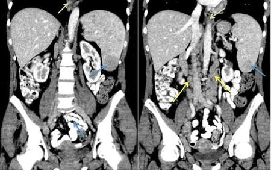
Q2
hard QID 22551
Correct
A 6-week-old male patient presents for follow-up imaging for an intrauterine anomaly discovered on prenatal ultrasound. Which of the following is the most likely diagnosis?
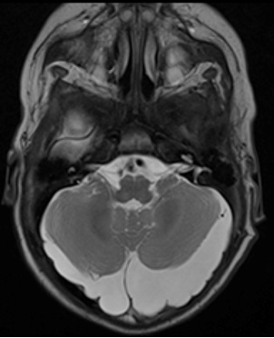
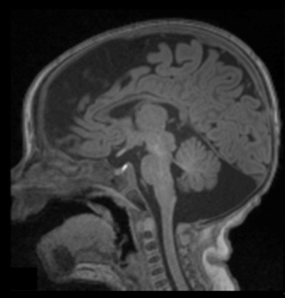
APosterior fossa arachnoid cyst(13%)
BMega cisterna magna(62%)
CBlake pouch cyst(9%)
DDandy-Walker malformation(15%)
EArnold-Chiari malformation(1%)
Your answerB
Correct answerB. Mega cisterna magna
Vital Concept
Mega cisterna magna shows normal cerebellar vermis, normal fourth ventricle, and enlarged posterior fossa fluid cavity without hydrocephalus. The cerebellar falx remains normal and there is physiological communication with subarachnoid space
Explanation
Mega cisterna magna
Mega cisterna magna is primarily an obstetric diagnosis and can be suggested when the cisterna magna is greater than 10 mm in diameter on prenatal ultrasound. It may be differentiated from Dandy-Walker spectrum abnormalities by the presence of an intact vermis (red arrows).
Further, the fourth ventricle is normal (blue arrows), as opposed to Dandy-Walker. As in the case shown, an additional differentiating factor can be the presence of a falx cerebelli which is within the posterior fossa cyst (yellow arrow), which may differentiate the finding from a posterior fossa arachnoid cyst.
Incorrect Answers:
A. Posterior fossa arachnoid cysts can be difficult to differentiate from mega cisterna magna but typically appear as extra-axial lesions producing mass effect on the adjacent brain. They follow CSF signal on T1- and T2-weighted imaging.
C. Blake pouch cysts are a cystic upward displacement of the area membranacea due to failure of the foramen of Magendie to perforate. This subsequently elevates the inferior cerebellar vermis, producing a rotated appearance of the vermis associated with apparent enlargement of the cisterna magna.
D. Dandy-Walker malformation (DWM) is a congenital anomaly thought to arise from abnormal development of the rhombencephalon with the resultant abnormal expansion of the fourth ventricle, which inhibits normal caudal migration of the tentorium and torcular herophili. The result is a classic configuration of the posterior fossa with three key features:
There are several other central nervous system (CNS) and non-CNS anomalies associated with DWM, including cleft lip and palate, grey matter heterotopias and cortical dysplasias, callosal dysgenesis, PHACES syndrome (Posterior fossa malformation, hemangiomas and arterial malformations, cardiac defects, eye anomalies, and sternal cleft), cardiac malformations, and genitourinary abnormalities. Life expectancy tends to follow the severity of these associated malformations.
E. Arnold-Chiari malformations are a series of malformations of the cerebellum and hindbrain with a characteristic classification system. Chiari 1 malformations are a protrusion of the cerebellar tonsils below the foramen magnum, typically peg-like in shape and greater than 5 mm below the foramen magnum.
Other spinal segmentation anomalies may be seen in addition, such as cervical cord syrinx or tethered cord. Chiari II malformations are characterized by the presence of a small posterior fossa with herniation of hindbrain tissue posterior to the upper cervical cord. The cerebellar tonsils tend to wrap around the medulla, while the fourth ventricle is stretched and narrowed. Cerebellar tissue often protrudes through the incisura and impacts upon the tectum, producing a “beaked” appearance. The absence of the cerebellar falx often produces interdigitation of the cerebellar folia. Patients frequently additionally have open neural tube defects in the spine, such as myelomeningoceles, which are more frequent in the lumbar spine than in the cervical spine. Chiari III malformations are characterized by the presence of an upper cervical or occipital defect with associated meningoencephalocele. The cerebellum, brainstem, and/or upper cervical spinal cord may be pulled into the defect.
Vital Concept: Mega cisterna magna shows normal cerebellar vermis, normal fourth ventricle, and enlarged posterior fossa fluid cavity without hydrocephalus. The cerebellar falx remains normal and there is physiological communication with subarachnoid space
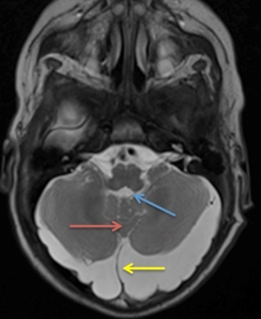
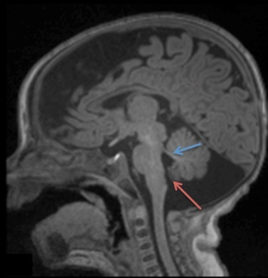
Q3
moderate QID 37401
Correct
A provider is reading screening mammograms and comes across the case below. Which of the following procedures did the patient most likely have?
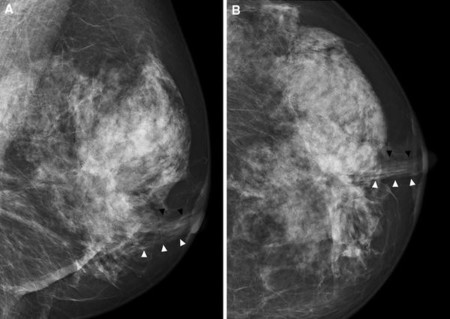
AAugmentation with an injectable agent(4%)
BLumpectomy(9%)
CPrior breast biopsy(2%)
DReduction mammoplasty(85%)
ETrauma(1%)
Your answerD
Correct answerD. Reduction mammoplasty
Vital Concept
Reduction mammoplasty creates characteristic inferior "sweeping" architectural distortion from tissue removal and rearrangement that should remain stable - progressive changes warrant investigation for malignancy.
Explanation
Reduction mammoplasty
Reduction mammoplasty involves excision of breast tissue from the inferior breast with superior repositioning of the nipple-areolar complex, creating characteristic "sweeping" architectural distortion and focal asymmetries from tissue rearrangement. The procedure produces predictable scarring patterns, fat necrosis, and dystrophic calcifications that should remain stable over time, requiring clinical history to distinguish from malignancy.
Incorrect Answers:
A. Injectable agents are sometimes used for breast augmentation, typically outside of the U.S. The appearance is that of numerous calcified nodules that represent tiny granuloma formation, which is the immune system's response to this foreign body.
B. In the setting of lumpectomy, one sees architectural distortion typically with a focal scar, and surgical material such as a clip or suture line. These findings are not present in this case.
C. A prior breast biopsy can have multiple appearances. Sometimes a clip or marker is the only clue. Other times there may be architectural distortion or even focal fat necrosis. None of these findings are present here.
E. Trauma to the breast may be occult mammographically, or it may appear as a hematoma that can appear as a mass, or fat necrosis, which would demonstrate a mass, coarse calcifications, and/or architectural distortion.
Vital Concept: Reduction mammoplasty creates characteristic inferior "sweeping" architectural distortion from tissue removal and rearrangement that should remain stable - progressive changes warrant investigation for malignancy.
Q4
easy QID 38058
Correct
Assuring that appropriate steps are taken to protect the rights and welfare of humans participating as subjects in the research is the principal task of which of the following?
AHealth Insurance Portability and Accountability Act(2%)
BInstitutional Review Board(95%)
CNational Institutes of Health(3%)
DInstitute of Medicine(1%)
EAmerican College of Radiology(0%)
Your answerB
Correct answerB. Institutional Review Board
Vital Concept
An Institutional Review Board serves an important role in the protection of the rights and welfare of human research subjects.
Explanation
Institutional Review Board
Explanation:
Under FDA regulations, an Institutional Review Board (IRB) is an appropriately constituted group that has been formally designated to review and monitor biomedical research involving human subjects. In accordance with FDA regulations, an IRB has the authority to approve, require modifications in (to secure approval), or disapprove research.
Incorrect Answers:
A. The federal law, known as the Health Insurance Portability and Accountability Act (HIPAA) of 1996 has, as its primary goals: making it easier for people to keep health insurance, protecting the confidentiality and security of healthcare information, and helping the healthcare industry control administrative costs. HIPAA defines protected health information as that which identifies the individual or for which there is a reasonable basis to believe that information that can be used to identify the individual is protected.
C. The National Institutes of Health (NIH) is an agency of the United States Department of Health and Human Services, which is the primary agency of the United States government responsible for biomedical and health-related research.
D. The Institute of Medicine (IOM) is an American nonprofit nongovernmental organization founded in 1970, under the congressional charter of the National Academy of Sciences. Its purpose is to provide national advice on issues relating to biomedical science, medicine, and health, and its mission is to serve as adviser to the nation to improve health.
E. The American College of Radiology (ACR) is a nonprofit professional medical association composed of diagnostic radiologists, radiation oncologists, interventional radiologists, nuclear medicine physicians, and medical physicists. It functions as a governing body and deals with issues of appropriateness and accreditation of radiologic procedures and processes.
Vital Concept: An Institutional Review Board serves an important role in the protection of the rights and welfare of human research subjects.
Q5
moderate QID 2841
Incorrect
A 32-year-old male presents to the emergency department obtunded. No other history is available. Computed tomography (CT) of the head demonstrates edema within the temporal lobes. Magnetic resonance imaging (MRI) is subsequently performed. Two fluid-attenuated inversion recovery (FLAIR) and one diffusion-weighted image (DWI) image are shown below. Which of the following is the most likely causative organism in this patient?
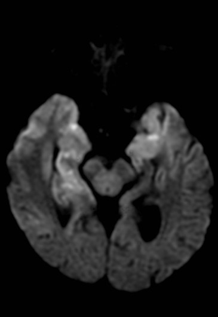
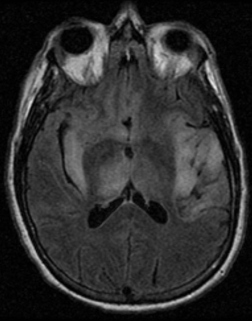
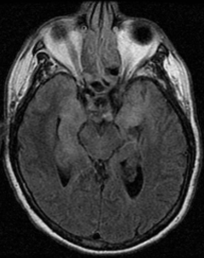
AHSV-1(80%)
BHSV-2(19%)
CStaphylococcus aureus(0%)
DCreutzfeldt-Jakob disease(1%)
ECryptococcus(0%)
Your answerB
Correct answerA. HSV-1
Vital Concept
Herpes simplex (HSV) encephalitis is the most common cause of fatal sporadic fulminant necrotizing viral encephalitis and has characteristic imaging findings, including bilateral asymmetrical involvement of the limbic system, medial temporal lobes, insular cortices, and inferolateral frontal lobes. The basal ganglia are typically spared.
Explanation
HSV-1
The asymmetric bilateral temporal, frontal, and insular FLAIR hyperintensity and associated restricted diffusion present on these images is characteristic of HSV encephalitis. Herpes simplex encephalitis (HSE) typically shows asymmetrical changes in mesial temporal lobes, inferior frontal lobes, and insula, with nearly all patients demonstrating FLAIR hyperintensities in these locations, if involved. The restricted diffusion reflects cytotoxic edema from viral-induced tissue necrosis. Asymmetric bilateral signal abnormality occurs in over one-third of HSE patients.
Incorrect Answers:
B. HSV-1 is the more likely cause of herpes simplex encephalitis.
C. Acute disseminated encephalomyelitis (ADEM) due to systemic Staphylococcus bacteremia would be expected to show lesions characteristic of demyelination on MRI.
D. Creutzfeldt-Jakob disease (CJD) usually shows an abnormal signal in the putamen and head of the caudate on MRI. Early CJD is characterized by an increased diffusion-weighted imaging (DWI) signal in the cortex or deep gray matter.
Vital Concept: Herpes simplex (HSV) encephalitis is the most common cause of fatal sporadic fulminant necrotizing viral encephalitis and has characteristic imaging findings, including bilateral asymmetrical involvement of the limbic system, medial temporal lobes, insular cortices, and inferolateral frontal lobes. The basal ganglia are typically spared.
Q6
hard QID 5013
Incorrect
An 82-year-old male with a history of previously treated nasopharyngeal carcinoma presents with multiple cranial nerve palsies; no lower motor deficits are present. A contrast-enhanced CT of the head followed by RICA angiogram are performed. T99m-HMPAO scan and CT are ordered and shown below. What is the diagnosis and what is the purpose of the nuclear medicine scan?
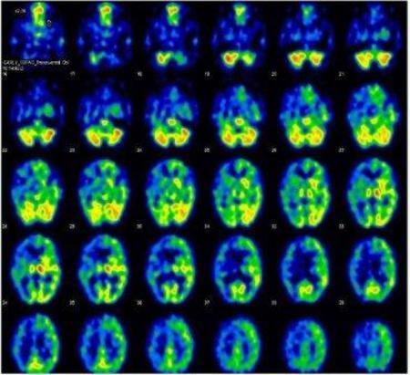
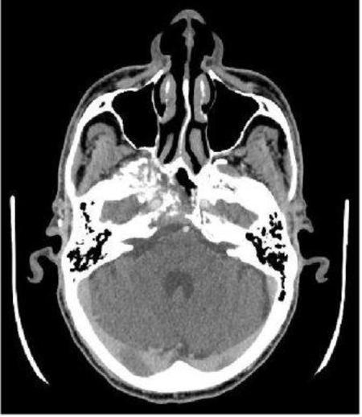
ARecurrent nasopharyngeal carcinoma with right-sided infarct; to evaluate for a stroke(18%)
BClival chordoma with iatrogenic occlusion of the right ICA; to evaluate for resectability(4%)
CClival chondrosarcoma complicated by right-sided infarct; to evaluate for stroke(19%)
DRecurrent nasopharyngeal carcinoma with iatrogenic occlusion of the right ICA; to evaluate for resectability(59%)
ELung metastasis with right-sided infarction; to evaluate for stroke(1%)
Your answerC
Correct answerD. Recurrent nasopharyngeal carcinoma with iatrogenic occlusion of the right ICA; to evaluate for resectability
Vital Concept
HMPAO imaging identifies baseline cerebral perfusion patterns and vascular territories at risk before tumor resection, allowing surgeons to modify their approach to preserve critical circulation. This method helps prevent inadvertent compromise of already hypoperfused brain regions during vessel manipulation or temporary occlusion.
Explanation
Recurrent nasopharyngeal carcinoma with iatrogenic occlusion of the right ICA; to evaluate for resectability
Given the history of nasopharyngeal carcinoma (NPC), the destructive lesion within the right petrous apex and clivus most likely represents recurrent tumor. Because the tumor completely encompasses the right internal carotid artery, the ability to completely resect vs partially resect the tumor becomes challenging. In this case, a balloon occlusion test is performed where the right ICA is occluded in the angiography suite. The patient is then assessed clinically as well as via a perfusion/T99m-HMPAO scan to evaluate the perfusion to the brain after temporary occlusion. If there is sufficient collateral flow through the circle of Willis with the patient experiencing no significant neurologic deficits, this suggests that the involved artery (right ICA in this case) can be sacrificed with complete resection of the tumor. In this case, there is clearly a significant decrease in perfusion to the right hemisphere, precluding complete resection of the tumor with sacrifice of the right ICA. The patient underwent partial resection, with sparing of the right ICA.
Incorrect Answers:
A. The permeative and destructive mass involving the right petrous apex and clivus most likely represents recurrent nasopharyngeal carcinoma (NPC), with circumferential involvement of the right internal carotid artery (ICA). However, the decreased perfusion in the right hemisphere on the nuclear medicine study is not a result of stroke, but rather to evaluate for resectability. In addition, the history states the patient had no lower motor deficits.
B. Reasonable alternative: the permeative and destructive mass involving the right petrous apex and clivus could represent a chordoma. However, it is off-center from the clivus, which is not a typical distribution for this tumor; given the history of prior NPC, this is the more likely diagnosis. The nuclear medicine study was ordered for evaluation of tumor resectability.
C. The destructive lesion at the right petrous apex/clivus could represent a chondrosarcoma. However, the nuclear medicine study was ordered for tumor resectability, not an infarct. The decreased perfusion within the right hemisphere is iatrogenic, not from the tumor or other sources of stroke (thrombus, dissection, etc.).
E. The destructive skull-based mass could represent a metastasis from an undiagnosed lung carcinoma. However, the study was performed to evaluate for tumor resectability, not for the diagnosis of a stroke.
Vital Concept: HMPAO imaging identifies baseline cerebral perfusion patterns and vascular territories at risk before tumor resection, allowing surgeons to modify their approach to preserve critical circulation. This method helps prevent inadvertent compromise of already hypoperfused brain regions during vessel manipulation or temporary occlusion.
Q7
easy QID 18065
Correct
Which of the following is the most likely diagnosis in this asymptomatic 45-year-old female?
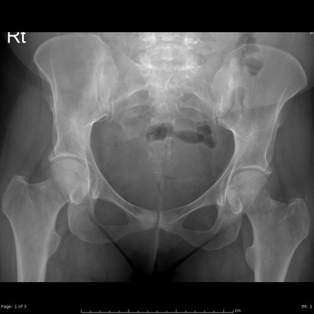
AHyperparathyroidism(3%)
BOsteitis pubis(96%)
CInfectious arthritis(0%)
DOsteoblastic metastatic disease(0%)
Your answerB
Correct answerB. Osteitis pubis
Vital Concept
Osteitis pubis shows irregular, sclerotic symphyseal margins with possible subchondral cysts on radiographs, representing noninfectious inflammation of the pubic symphysis. In asymptomatic patients, these degenerative-appearing changes are often incidental findings that don't require treatment, distinguishing it from symptomatic athletic pubalgia or infectious osteomyelitis which shows more extensive bone marrow edema and soft-tissue involvement.
Explanation
Osteitis pubis
This is a typical case of osteitis pubis, which is non-infectious inflammation of the symphysis pubis. Most commonly an incidental finding, it can present with pain, and infection should be excluded in those cases. The radiographic findings are subchondral sclerosis, subchondral cysts, joint surface irregularity, and narrowing of the joint space, all of which are present in this case.
Incorrect Answers:
A. Hyperparathyroidism will cause subchondral resorption rather than sclerosis as in this case.
C. Infection can look very similar; however, the patient will usually be symptomatic. Joint aspiration in such cases can differentiate both entities.
D. Metastatic disease will present as multiple lesions with more asymmetry in distribution. Isolated involvement of the symphysis pubis is unlikely.
Vital Concept: Osteitis pubis shows irregular, sclerotic symphyseal margins with possible subchondral cysts on radiographs, representing noninfectious inflammation of the pubic symphysis. In asymptomatic patients, these degenerative-appearing changes are often incidental findings that don't require treatment, distinguishing it from symptomatic athletic pubalgia or infectious osteomyelitis which shows more extensive bone marrow edema and soft-tissue involvement.
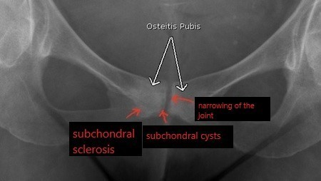
Q8
hard QID 5087
Incorrect
Which of the following eponymous terms names the findings seen below?
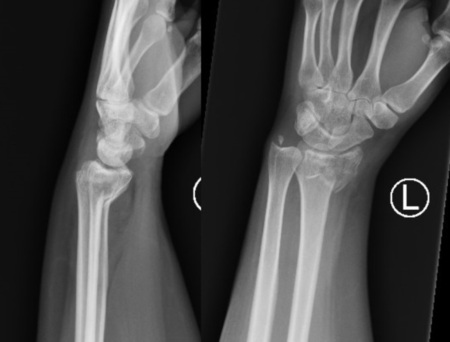
ABarton fracture(5%)
BGaleazzi fracture/dislocation(4%)
CSmith fracture (type II)(65%)
DColles fracture(23%)
EEssex-Lopresti injury(4%)
Your answerA
Correct answerC. Smith fracture (type II)
Vital Concept
Distal radius fracture with volar angulation and intra-articular extension is a reverse Barton (or type II Smith) fracture.
Explanation
Smith fracture (type II)
The radiographs demonstrate acute fractures of the distal radius and ulnar styloid with palmar angulation of the distal radius fracture fragments, resulting in a "garden spade" deformity. There is intra-articular extension to the radiocarpal joint. The fracture and angulation of the radius with intra-articular extension are termed a type II Smith fracture (a.k.a. reverse Barton fracture) and commonly result from high-energy force onto a flexed wrist. The ulnar fracture seen in this case is not a feature of a classic Smith fracture. Smith fractures are less common than Colles fractures, and closed reduction is often adequate for cases without intraarticular extension.
Incorrect Answers:
A. A Barton fracture is defined as an intra-articular distal radius fracture with dorsal displacement or angulation. This case shows an intra-articular distal radius fracture with volar displacement/angulation.
B. A Galeazzi fracture/dislocation refers to a fracture of the middle or distal third of the radial diaphysis with concurrent dislocation of the distal radioulnar joint. In the example shown, there is an acute distal ulnar fracture in addition to probable disruption of the distal radioulnar joint.
D. A Colles fracture describes a transverse fracture of the distal radial metaphysis with dorsal angulation of the distal fragments. Colles fractures are more common than Smith fractures and frequently result from a fall on outstretched hand with wrist extension. Treatment often involves closed reduction and splinting with volar pressure at the fracture site.
E. An Essex-Lopresti injury refers to a comminuted radial head fracture with dislocation of the distal radioulnar joint. The entity does not involve fractures of the distal radius or ulna, as seen in this case.
Vital Concept: Distal radius fracture with volar angulation and intra-articular extension is a reverse Barton (or type II Smith) fracture.
Q9
moderate QID 2945
Correct
A CT of the abdomen and pelvis was performed using 140kvP, 400mAs, pitch of 1.5. Due to recent concerns for medical radiation, you want to decrease the dose (CTDI) to less than half of the dose that was used for the prior study. Which of the following adjustments can be made to accomplish this goal, if only a single parameter is adjusted, and all other parameters are held constant?
ADecreasing the pitch to 1(2%)
BDecreasing the kVp to 100(73%)
CDecreasing the mAs to 300(3%)
DIncreasing the pitch to 2(13%)
EDecreasing the mAs to 250(10%)
Your answerB
Correct answerB. Decreasing the kVp to 100
Vital Concept
On CT scanning, dose is directly proportional to mAs and kVp and inversely related to pitch. Decreasing dose has obvious advantages regarding patient radiation exposure; however, image noise must also be considered for each clinical indication to determine if the exam parameters will allow for diagnostic images to be obtained using the low-dose protocol.
Explanation
Decreasing the kVp to 100
X-ray output and patient dose follow an exponential relationship with kilovoltage, not a linear relationship. When kilovoltage decreases, dose drops exponentially because lower kVp reduces x-ray production efficiency, average photon energy, and total x-ray output. This exponential relationship explains why relatively small decreases in kilovoltage produce dramatic dose reductions as compared to changed in mAs.
Incorrect Answers:
A. Dose is inversely related to pitch.
C. E. Dose is directly proportional to mAs. Therefore, in this question, mAs would have to be decreased by at least 50% (200 mAs) to decrease the dose by at least half.
D. Dose is inversely related to pitch. Therefore, in this question, pitch would have to be more than doubled to decrease the dose by at least half.
Vital Concept: On CT scanning, dose is directly proportional to mAs and kVp and inversely related to pitch. Decreasing dose has obvious advantages regarding patient radiation exposure; however, image noise must also be considered for each clinical indication to determine if the exam parameters will allow for diagnostic images to be obtained using the low-dose protocol.
Q10
moderate QID 5005
Incorrect
A 3-month-old female with recurrent urinary tract infections comes to the clinic for further workup. A voiding nuclear cystography is ordered and shown below. What grade reflux is shown?
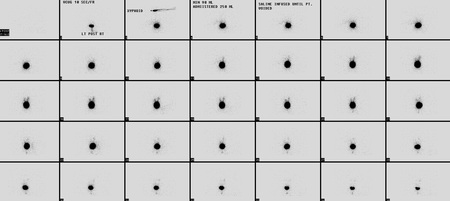
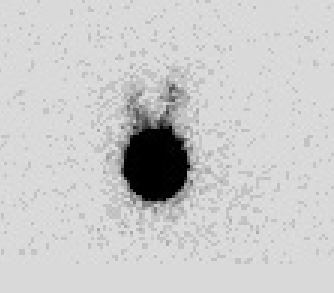
ARNC grade II(10%)
BRNC grade III(3%)
CRNC grade I(86%)
DRNC grade IV(1%)
Your answerA
Correct answerC. RNC grade I
Vital Concept
Radionuclide cystography offers highly sensitive vesicoureteral reflux detection with significantly lower radiation dose than contrast cystography. This makes it ideal for serial follow-up in pediatric patients to assess spontaneous resolution or to monitor treatment response.
Explanation
RNC grade I
The activity is limited to the ureters, correlating with RNC grade I. This case is not advanced enough to warrant an RNC grade II (with activity reaching the collecting system with minimal activity) or RNC grade III (dilation of the collection system and ureter). There is no RNC grade IV (choice D). The radionuclide classification of reflux is less exacting and differs from the radiographic classification.
-- RNC grade 1, with activity limited to the ureter (radiographic grade I)
-- RNC grade 2, with activity reaching the collecting system with no or minimal activity in ureter (radiographic grades II and III)
-- RNC grade 3, with a dilatation of the collecting system and dilated tortuous ureter (correlating with radiographic grades IV and V)
Vital Concept: Radionuclide cystography offers highly sensitive vesicoureteral reflux detection with significantly lower radiation dose than contrast cystography. This makes it ideal for serial follow-up in pediatric patients to assess spontaneous resolution or to monitor treatment response.
Q11
easy QID 56828
Incorrect
Which of the following medication regimens does the American College of Radiology (ACR) Manual on Contrast Media advocate for premedication in the setting of IV contrast allergy?
APrednisone PO 50mg 13 hours, 7 hours, and 1 hour prior to exam, as well as Benadryl 50mg 1 hour before exam(96%)
BMethylprednisolone PO 32mg 36 hours and 24 hours before exam, as well as Benadryl 50mg 1 hour before exam(1%)
CMethylprednisolone sodium succinate 4mg IV q4 hours until exam, as well as Benadryl 50mg IV 1 hour before exam(2%)
DHydrocortisone sodium succinate 800mg IV q4 hours until exam, as well as Benadryl 50mg IV 1 hour before exam(0%)
Your answerB
Correct answerA. Prednisone PO 50mg 13 hours, 7 hours, and 1 hour prior to exam, as well as Benadryl 50mg 1 hour before exam
Explanation
Prednisone PO 50mg 13 hours, 7 hours, and 1 hour prior to exam, as well as Benadryl 50mg 1 hour before exam
The ACR Manual on Contrast Media recommends prednisone PO 50mg 13 hours, 7 hours, and 1 hour prior to exam as well as Benadryl 50mg 1 hour before exam in cases of elective contrast-enhanced exams. An alternative PO regimen consisting of methylprednisolone is also available. In cases of urgent and emergent need, additional protocols using IV methylprednisolone sodium succinate and hydrocortisone sodium succinate are suggested, but these lack definitive evidence of efficacy within 4-6 hours. The aforementioned regimens are in situations where the allergy is mild. Premedication has not been shown to decrease the incidence of severe life-threatening allergic reactions.
Incorrect Answers:
B. The recommended dose and regimen is methylprednisolone PO 32mg 12 hours and 2 hours before exam, as well as Benadryl 50mg 1 hour before exam.
C. The recommended dose and regimen is methylprednisolone sodium succinate 40mg IV every 4 hours until exam as well as Benadryl 50mg IV 1 hour before exam.
D. The recommended dose and regimen is hydrocortisone sodium succinate 200mg IV every 4 hours until exam, as well as Benadryl 50mg IV 1 hour before exam.
Q12
easy QID 44016
Correct
An incomplete ring of enhancement is specific for what process?
AAbscess(2%)
BNeoplasm(1%)
CDemyelination(94%)
DMetastatic disease(1%)
ERadiation necrosis(3%)
Your answerC
Correct answerC. Demyelination
Explanation
Demyelination
The open ring sign is a relatively specific sign for demyelination, most commonly multiple sclerosis (MS). It is helpful in distinguishing between ring enhancing lesions, the differential for which is broad and includes all the listed answer choices. The enhancing component is thought to represent the advancing front of demyelination and is preferentially seen along the white matter side of the lesion. The open part of the ring will thus point towards the gray matter.
Q13
easy QID 47446
Correct
Which of the following is the diagnosis, given this finding seen on this unenhanced CT scan performed on 42-year-old female for renal stones?
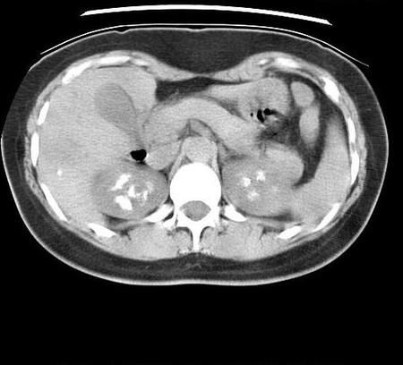
ARenal calculi(1%)
BEmphysematous pyelonephritis(0%)
CRemote renal trauma(0%)
DMedullary nephrocalcinosis(98%)
EChronic glomerulonephritis(0%)
Your answerD
Correct answerD. Medullary nephrocalcinosis
Vital Concept
Medullary nephrocalcinosis appears as high-attenuation calcifications within the renal pyramids on noncontract CT, representing the most common form of nephrocalcinosis and typically involving the renal papillae.
Explanation
Medullary nephrocalcinosis
The image shows calcifications in the renal medullary region bilaterally, consistent with medullary nephrocalcinosis. Renal medullary nephrocalcinosis is the most common form of nephrocalcinosis and refers to the deposition of calcium salts in the medulla of the kidney. There are many underlying etiologies, including hyperparathyroidism, medullary sponge kidney, type 1 renal tubular acidosis, sickle cell disease, NSAID nephropathy, hypervitaminosis D, milk-alkali syndrome, and multiple myeloma.
Incorrect Answers:
A. Renal calculi appear as discrete dense foci within the collecting system, not the renal parenchyma, as is the case here.
B. Emphysematous pyelonephritis would present as gas within the renal parenchyma. Patients are often very ill.
C. and E. Chronic glomerulonephritis is a cause of cortical calcinosis, not medullary calcinosis. The same can be said of remote trauma, which would appear more focal, and often with associated cortical scarring and contour abnormality.
Vital Concept: Medullary nephrocalcinosis appears as high-attenuation calcifications within the renal pyramids on noncontract CT, representing the most common form of nephrocalcinosis and typically involving the renal papillae.
Q14
hard QID 63418
Correct
A 57 year-old woman presents with chronic mild shortness of breath. The patient is otherwise healthy with no significant past medical history and no history of smoking. Based on the following expiratory high-resolution CT images, what is the most likely diagnosis?
Diffuse idiopathic neuroendocrine cell hyperplasia (DIPNECH) is defined by proliferation of neuroendocrine cells within the lung parenchyma. Imaging demonstrates mosaic attenuation secondary to air trapping and multiple bilateral pulmonary nodules. The patients can be asymptomatic, but often experience chronic respiratory symptoms as a result of the constrictive bronchiolitis.
Incorrect Answers:
A. Although expiratory HRCT can show air trapping in these patients, it presents almost exclusively in patients who smoke.
B. The patient is otherwise healthy. Given mild chronic symptoms, it is less likely that the pulmonary nodules represent metastases from a primary lung cancer.
D. Septic emboli are in the differential for multiple bilateral pulmonary nodules, but these nodules are often cavitary and more likely to be peripheral. Also, the patient’s stated history does not specifically lend itself to this diagnosis.
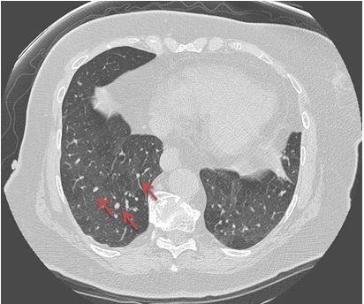
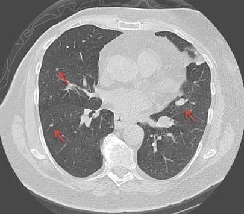
Q15
moderate QID 12307
Correct
Which of the following is the diagnosis on this static planar image from a nuclear medicine study?
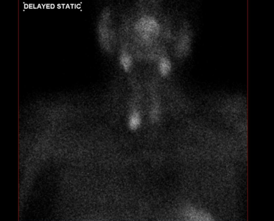
ASialadenitis of the submandibular glands(5%)
BGraves' disease(2%)
CParathyroid adenoma(90%)
DMulti-nodular goiter(3%)
Your answerC
Correct answerC. Parathyroid adenoma
Vital Concept
Sestamibi uptake occurs in both thyroid and parathyroid tissues. Abnormal parathyroid tissue retains tracer longer than normal thyroid on these examinations. Early images show both structures. Delayed images demonstrate differential washout with persistent focal uptake in adenomas while normal thyroid clears. This retention pattern enables adenoma localization.
Explanation
Parathyroid adenoma
Parathyroid adenoma will show retained activity on delayed images (shown); the normal thyroid gland will wash out on delayed images. Eutopic superior parathyroid glands are found posterior to the upper or middle third of the gland. The eutopic inferior parathyroid glands are found lateral, anterior, or posterior to the lower third of the thyroid gland. The image demonstrates a eutopic right inferior parathyroid adenoma.
Incorrect Answers:
A. These are planar images from a parathyroid 99mTc sestamibi scan. The normal distribution of the radiopharmaceutical is parotid glands, submandibular glands, myocardium, liver and the thyroid gland. The normal parathyroid gland doesn't take up the radiopharmaceutical. The submandibular uptake is normal.
B. Initial imaging is done in 10 to 15 minutes and the delayed imaging is done after 1.5 to 3 hours. Normal thyroid uptake is shown on the initial image.
D. The uptake in the thyroid gland is normal.
Vital Concept: Sestamibi uptake occurs in both thyroid and parathyroid tissues. Abnormal parathyroid tissue retains tracer longer than normal thyroid on these examinations. Early images show both structures. Delayed images demonstrate differential washout with persistent focal uptake in adenomas while normal thyroid clears. This retention pattern enables adenoma localization.
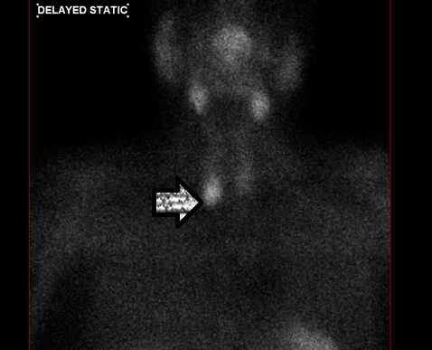
Q16
QID 24047
Correct
Which of the following statements regarding the entity depicted is most accurate?
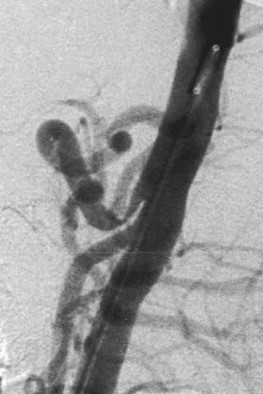
AIt can be symptomatic.(80%)
BThere is a higher incidence in males.(5%)
CThere is an association with weight gain.(2%)
DRespiratory variability is usually not present in the physical examination.(3%)
EIt can be treated with stenting.(11%)
Your answerA
Correct answerA. It can be symptomatic.
Vital Concept
DSA demonstrates characteristic "hooked" appearance of the celiac artery origin on lateral views due to compression by the median arcuate ligament, often with post-stenotic dilation and prominent pancreaticoduodenal collateral circulation from the superior mesenteric artery.
Explanation
It can be symptomatic.
The aortogram shows compression at the origin of the celiac axis (blue arrow), compatible with median arcuate ligament syndrome. Treatment for this entity is surgical (to enlarge the diaphragmatic hiatus). Stenting is not performed because repeated extrinsic mechanical compression can result in stent fracture.
This can result in recurrent stenosis, thrombosis, or embolism. Surgical release is the preferred method of treatment when this is symptomatic. This entity is caused by extrinsic compression of the celiac axis by the median crus of the diaphragm. It is usually asymptomatic and an incidental finding. If symptomatic, symptoms include nausea, vomiting, and chronic abdominal pain.
Incorrect Answers:
B. This condition is more frequently seen in females.
C. It shows an association with recent weight loss, likely due to loss of intra-abdominal fat that had previously acted as padding.
D. When symptoms, such as cramps and abdominal pain, are present, they are worsened by expiration.
Vital Concept: DSA demonstrates characteristic "hooked" appearance of the celiac artery origin on lateral views due to compression by the median arcuate ligament, often with post-stenotic dilation and prominent pancreaticoduodenal collateral circulation from the superior mesenteric artery.
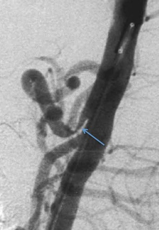
Q17
hard QID 5020
Incorrect
A provider receives a package of Tl-201 and performs an external wipe test of the package. The measured activity is 875 dpm/100 cm . What should the provider do next?
AProceed with opening the package.(59%)
BExit the hot lab and immediately call the radiation safety officer.(23%)
CNotify the radiation safety officer within 24 hours.(5%)
DReturn the unopened package to the manufacturer.(1%)
ENotify the shipper and the NRC within 24 hours.(13%)
Your answerB
Correct answerA. Proceed with opening the package.
Explanation
Proceed with opening the package.
According to the ABR RISC study guide, an external wipe test of a transported package of Tl-201 should not exceed 20,000 dpm/100cm^2
. Therefore, this package is within normal range and can be opened as long as all other criteria are met. If this level were to be exceeded, the provider should notify the radiation safety officer immediately. The shipper should also be notified as soon as possible.
Q18
moderate QID 20568
Correct
A 75-year-old patient presents to the emergency department with a complaint of progressive difficulty swallowing solids, and he states that swallowed food "sometimes comes back up." A chest x-ray with swallowed barium is shown below. What is the most common complication of the problem illustrated?
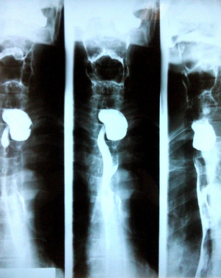
AAspiration(34%)
BBleeding(49%)
CFistula formation(5%)
DObstruction(6%)
ESquamous cell carcinoma(5%)
Your answerA
Correct answerA. Aspiration
Vital Concept
The most common complication of a Zenker's diverticulum is aspiration, which can cause pneumonia.
Explanation
Aspiration
The image shows a Zenker’s diverticulum (ZD), as evidenced by the posteriorly directed esophageal outpouching. ZD occurs in older persons due to a weakness in the posterior pharyngoesophageal junction at the region of the inferior pharyngeal constrictor muscle and the cricopharyngeal muscle. This area of weakness is called the Killian triangle, which is more common in men. A Zenker's diverticulum may cause dysphagia, cervical borborygmus, halitosis, regurgitation of undigested food, and other non-specific symptoms. The most common complication is aspiration, which may cause pneumonia. Small ZD may be asymptomatic, but more symptomatic cases can be repaired via open surgery or endoscopically.
Incorrect Answers:
B. Bleeding may occur due to medication retained in the pouch, but this is less common than aspiration.
C. Uncommonly, a fistula can form between the diverticulum and the trachea.
D. Esophageal obstruction may result from a very large ZD compressing the esophagus.
E. Squamous cell carcinoma is rare and occurs in 0.3-1.5% of cases.
Vital Concept: The most common complication of a Zenker's diverticulum is aspiration, which can cause pneumonia.
Q19
hard QID 38070
Correct
An orthopedist orders lumbar spine radiographs on a 75-year-old male with 6 weeks of lower back pain and no history of trauma or malignancy. According to the ACR appropriateness criteria, this is a "usually appropriate" indication for this study and should receive a rating of?
A0(0%)
B1 to 3(4%)
C4 to 6(17%)
D7 to 9(78%)
E10(2%)
Your answerD
Correct answerD. 7 to 9
Vital Concept
The ACR appropriateness criteria are based on clinical conditions and associated modifiers. Each clinical condition includes three variants based on patient factors and symptoms. For each variant, each possible imaging modality is rated on a 1 (low) to 9 (high) scale based on the appropriateness of the modality for the variant under discussion.
Explanation
7 to 9
Explanation:
In this case lower back pain is the symptom, and the duration and pertinent history (no history of trauma or malignancy) and the patient's age are the modifiers. Ratings are determined by the expert panel using a process known as the Modified Delphi Technique, which attempts to reach consensus of the panel members through serial rounds of anonymous voting. Ratings of 1-3 are defined as “usually not appropriate,” 4-6 as “may be appropriate,” and 7-9 as “usually appropriate.” The panel may also indicate, if needed, that there was “No consensus.” It is important to remember that the ratings refer to the appropriateness of an imaging modality for the initial imaging examination based on the variant.
Incorrect Answers:
A. E.
Scores of 0 and 10 are not used.
B.
Ratings of 1 to 3 are defined as “usually not appropriate,”
C.
Ratings of 4 to 6 are defined as “may be appropriate.”
Vital Concept: The ACR appropriateness criteria are based on clinical conditions and associated modifiers. Each clinical condition includes three variants based on patient factors and symptoms. For each variant, each possible imaging modality is rated on a 1 (low) to 9 (high) scale based on the appropriateness of the modality for the variant under discussion.
Q20
easy QID 2855
Correct
This 64-year-old female with a history of known DISH (diffuse idiopathic skeletal hyperostosis) presented with neck pain and progressive spastic paresis. Which of the following additional finding is shown?
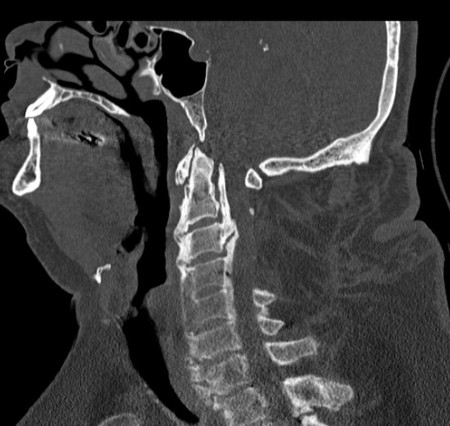
AProgressive systemic sclerosis(0%)
BMeningioma(0%)
CCalcified herniated disc(0%)
DOssification of the posterior longitudinal ligament(99%)
Your answerD
Correct answerD. Ossification of the posterior longitudinal ligament
Vital Concept
Ossification of the posterior longitudinal ligament (OPLL) is often associated with several other entities, including diffuse idiopathic skeletal hyperostosis (DISH), ossification of the ligamentum flavum, and ankylosing spondylitis.
Explanation
Ossification of the posterior longitudinal ligament
Ossification of the posterior longitudinal ligament (OPLL) is by definition ossification of the posterior longitudinal ligament >2 mm in thickness, as seen here. DISH affects the anterior longitudinal ligament while OPLL affects the posterior ligament - they represent different ossification processes that commonly coexist (20% to 30% of OPLL cases also have DISH).
Incorrect Answers:
A. Progressive systemic sclerosis can cause deposition of hydroxyapatite or pyrophosphate; however, its appearance is often more "cloud-like" rather than linear as this case illustrates.
B. C. A meningioma or calcified herniated disc would not cause this classic "T-shaped posterior longitudinal ligament" appearance.
Vital Concept: Ossification of the posterior longitudinal ligament (OPLL) is often associated with several other entities, including diffuse idiopathic skeletal hyperostosis (DISH), ossification of the ligamentum flavum, and ankylosing spondylitis.
Q21
easy QID 2913
Correct
A breastfeeding patient is administered a 1 MBq dose of 131I. How long should the patient discontinue breastfeeding?
A24 hours(1%)
B48 hours(1%)
C5 to 7 days(2%)
D2 to 4 weeks(2%)
EThe patient should no longer breastfeed for the current child and may resume after a subsequent pregnancy.(94%)
Your answerE
Correct answerE. The patient should no longer breastfeed for the current child and may resume after a subsequent pregnancy.
Explanation
The patient should no longer breastfeed for the current child and may resume after a subsequent pregnancy.
For 131I, recommendations are that the patient should not resume breastfeeding for the current child but may breastfeed babies from subsequent pregnancies. It is also recommended to stop breastfeeding 6 weeks prior to treatment with 131I due to the increased radiosensitivity of the lactating breast. Remember that the recommendation for discontinuation of breastfeeding for diagnostic doses of 123I is 3 days.
Q22
moderate QID 2859
Correct
A 38-year-old female presents with the imaging findings shown. Which of the following is most likely associated with this patient's imaging findings?
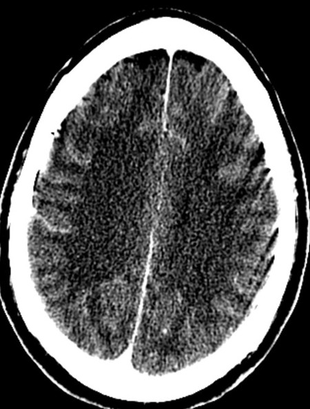
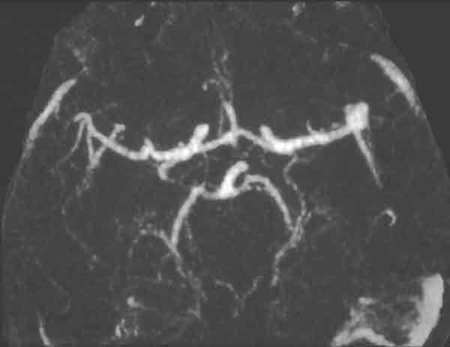
ASpiculated pulmonary mass(3%)
BHypoechoic, irregular thyroid mass with microcalcification(3%)
CBlastic bone lesion(4%)
DNumerous bilateral renal cysts(90%)
Your answerD
Correct answerD. Numerous bilateral renal cysts
Vital Concept
Intracranial aneurysm with bilateral renal cysts is highly suspicious for autosomal dominant polycystic kidney disease.
Explanation
Numerous bilateral renal cysts
The images demonstrate subarachnoid hemorrhage (red arrow) and a left MCA aneurysm (black arrow) Autosomal dominant polycystic kidney disease carries a significantly increased risk of intracranial aneurysms, with a substantial proportion of patients harboring unruptured aneurysms. The bilateral renal cysts represent the classic kidney manifestation of this genetic disorder. Polycystic kidney disease affects connective tissue throughout the body, predisposing to arterial wall weakness and aneurysm formation.
Incorrect Answers:
A. B. C. These findings suggest separate pathologic processes—lung mass concerning for malignancy, thyroid mass suggesting possible carcinoma, and bone lesions indicating metastatic disease or other bone pathology. These are not directly associated with intracranial aneurysm.
Vital Concept: Intracranial aneurysm with bilateral renal cysts is highly suspicious for autosomal dominant polycystic kidney disease.
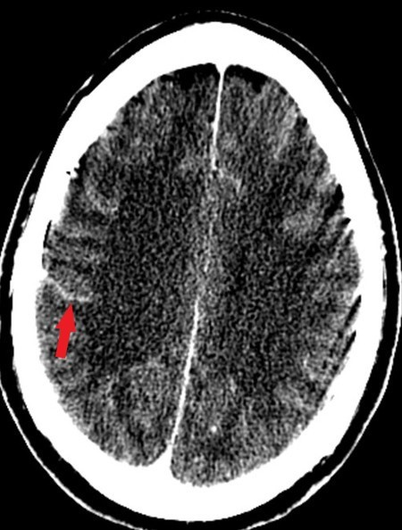
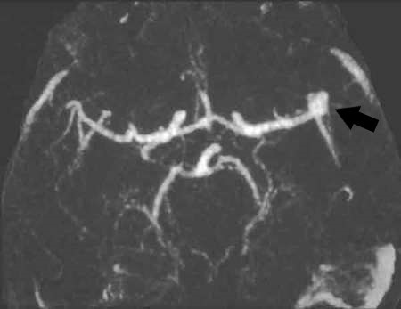
Q23
moderate QID 39256
Correct
A 32-year-old female patient with a history of miscarriage is referred to a provider from their reproductive endocrinology and infertility specialist for uterine evaluation. The provider performs an axial T2 MRI. Which of the following is the likely diagnosis?
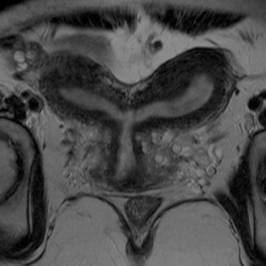
AArcuate uterus(3%)
BBicornuate uterus(88%)
CUnicornuate uterus(0%)
DUterine didelphys(7%)
EPartial uterine agenesis(1%)
Your answerB
Correct answerB. Bicornuate uterus
Explanation
Bicornuate uterus
The axial T2 MRI shows a cleft greater than 1 cm in depth (green arrow) in the external contour of the uterine fundus. Inferiorly, the uterus appears normal (blue arrow). This is compatible with a bicornuate uterus, which results from incomplete or partial fusion of the mullerian ducts and accounts for approximately 10% of mullerian duct anomalies.
Incorrect Answers:
A. An arcuate uterus occurs with near reabsorption of the uterovaginal septum and is characterized on MR by a mild indentation of the internal fundal contour in a normal-sized uterus.
C. A unicornuate uterus results from normal development of one mullerian duct and near-complete to complete arrested development of the contralateral duct. This anomaly has four potential subtypes: no rudimentary horn, rudimentary horn with no uterine cavity, rudimentary horn with a communicating cavity to the normal side, and a rudimentary horn with a noncommunicating cavity. MR demonstrates one of these variants as a small, curved unicornuate uterus which is typically displaced off midline.
D. Uterine didelphys results from complete failure of mullerian duct fusion. Each duct develops fully with duplication of the uterine horns, cervix, and proximal vagina. Imaging shows two widely divergent uterine horns (arrows) separated by a deep fundal cleft, with two separate cervices and two distinct vaginas.
E. In the presence of complete uterine agenesis, there is no identifiable uterus. In partial agenesis, a hypoplastic uterus may be seen as a soft-tissue pelvic mass with signal intensity characteristics of normal myometrium.
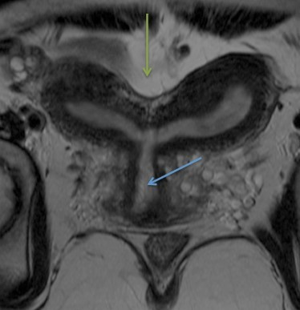
Q24
easy QID 39315
Correct
Which of the following MR safety zones is the zone in which patients are typically screened for MR safety issues?
AZone I(4%)
BZone II(93%)
CZone III(3%)
DZone IV(0%)
EZone V(0%)
Your answerB
Correct answerB. Zone II
Explanation
Zone II
There are several safety measures involved in the use of magnetic resonance (MR) scanners, primarily due to the scanners’ strong magnetic fields. One safety measure is the zone classification system that signifies progressive monitoring and restriction of entry into higher numbered, more controlled zones. Zone II is the interface between the unrestricted access of Zone I and the tightly controlled access to Zones III and IV. Zone II can be used to greet patients, obtain histories, and screen patients for safety issues. Patients in Zone II should be under the supervision of MR personnel.
Incorrect Answers:
A. Zone I signifies unrestricted access. It is the area through which patients and personnel enter the controlled MR environment.
C. Zone III is the area where there is potential danger of serious injury or death from interaction between unscreened people or ferromagnetic objects and the magnetic field of the scanner. The scanner control room is typically in Zone III. Access to Zone III must be strictly restricted and under the supervision of MR personnel with physical restrictions such as locks or passkey systems.
D. Zone IV is the highest of the four MR safety zones. Zone IV not only denotes the location of the MR scanner magnet room, it is also accessible only under the direct observation of MR personnel. Zone IV should be clearly demarcated and marked as potentially hazardous due to the strong magnetic field.
E. Zone V does not currently exist within the MR safety zone classification system. The highest, most controlled level in the classification system is Zone IV.
Q25
hard QID 56259
Correct
The Computed Tomography (CT) Accreditation Program developed by the American College of Radiology (ACR) has established diagnostic CT references values. Which of the following is the CT dose index (CTDIvol) for a routine adult abdomen exam?
A2.5 mSv(6%)
B2.5 mGy(9%)
C25 mSv(15%)
D25 mGy(70%)
Your answerD
Correct answerD. 25 mGy
Vital Concept
CTDIvol for adult abdominal CT has a reference value of 25 mGy and pass/fail threshold of 30 mGy measured using a 32 cm phantom, balancing image quality with radiation safety.
Explanation
25 mGy
The CTDI_vol
(CT dose index) is the metric used by the ACR for CT Accreditation. The value is calculated by dividing the weighted CTDI_average
by the pitch and is reported in milligray. It reflects scanner radiation output and absorbed dose of a standardized acrylic phantom (32 cm diameter in the case of an adult abdomen).
The CTDI_vol
can then be multiplied by the scan length to arrive at a dose-length product (DLP). Finally, this value can be incorporated with absorbed dose to specific organs and the radiosensitivity of each organ to arrive at an effective dose, which is measured in millisieverts.
For the purposes of this question, the CT radiation dosimetry reference values are as follows:
Examination//Reference Value CTDIvol:
Adult Head//75 mGy
Adult Abdomen//25 mGy
Pediatric Head (1-year-old)//35 mGy
Pediatric Abdomen (40-50 lb.) - 16 cm phantom//15 mGy
Pediatric Abdomen (40-50 lb.) - 32 cm phantom//7.5 mGy
Incorrect Answers:
A. Both the value and units are incorrect.
B. Although the units are correct, the value is off by an order of magnitude.
C. Although the value is correct, the units reflect patient dose.
Vital Concept: CTDIvol for adult abdominal CT has a reference value of 25 mGy and pass/fail threshold of 30 mGy measured using a 32 cm phantom, balancing image quality with radiation safety.
Q26
easy QID 20592
Correct
A 28-year-old male patient presents to the clinic with left knee pain and instability and obtains this radiograph. Which of the following ligament was remotely injured?
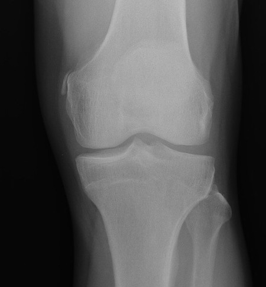
AACL(4%)
BPCL(1%)
CLateral meniscus(0%)
DLCL(1%)
EMCL(93%)
Your answerE
Correct answerE. MCL
Explanation
MCL
The finding in this case is a Pellegrini-Stieda lesion, which is a vertically-oriented calcification at the proximal aspect of the MCL at its femoral attachment (yellow arrow). In the setting of knee pain and instability, this finding is compatible with chronic MCL pathology such as a sprain or tear.
Incorrect Answers:
A. ACL tears can be suggested on radiography in the presence of Segond fracture (an avulsion fracture at lateral proximal tibia), deep sulcus sign (lateral femoral condyle terminal sulcus deepening, best seen on lateral view), or with anterior displacement of the tibia seen on lateral radiography.
B. PCL tear may be suggested when there is an avulsion fracture at the medial aspect of the proximal tibia (reverse Segond fracture).
C. Meniscal degeneration may be associated with ligamentous tears. Plain film findings of meniscal degeneration are inconsistent.
D. LCL tears can be suggested in the presence of osseous avulsion fractures at the fibular head along the LCL complex insertion.
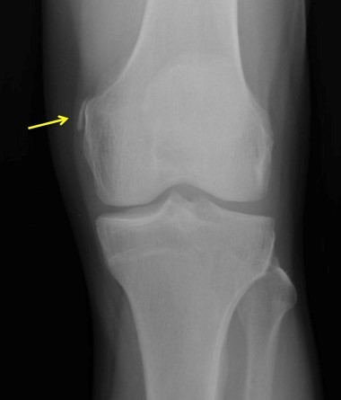
Q27
hard QID 2932
Correct
What is the maximum annual total effective dose equivalent for a radiation worker under the age of 18?
A0.5 mSv(8%)
B5 mSv(71%)
C50 mSv(20%)
D0.5 Sv(1%)
E5 Sv(1%)
Your answerB
Correct answerB. 5 mSv
Vital Concept
The NRC annual occupational dose limit for minors is 10% of adult dose limits. The adult limit is 50 mSv (0.05 Sv/5 rem), so the limit for minors is 5 mSv (0.005 Sv/0.5 rem).
Explanation
5 mSv
According to the 2025 Radioisotope Safety Content (RISC) Study Guide, the maximum allowable radiation dose for minor (<18 years old) radiation workers (whole body) is one-tenth the adult limit. The adult limit is 50 mSv (0.05 Sv/5 rem), so the limit for minors is 5 mSv (0.005 Sv/0.5 rem).
Incorrect Answers:
A.C.D.E. The NRC annual occupational dose limit for minors is 5 mSv. The other values are incorrect.
Vital Concept: The NRC annual occupational dose limit for minors is 10% of adult dose limits. The adult limit is 50 mSv (0.05 Sv/5 rem), so the limit for minors is 5 mSv (0.005 Sv/0.5 rem).
Q28
hard QID 22408
Incorrect
A 43-year-old male ICU patient with acute kidney injury and elevated creatinine not responsive to hydration therapy undergoes placement of a tunneled hemodialysis catheter. Which of the following can be said regarding the catheter positioning?
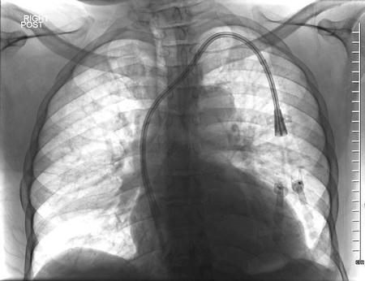
AThe catheter is in acceptable position.(60%)
BThe catheter is too deep -- it should be retracted to the level of the superior cavoatrial junction.(38%)
CThe catheter is not deep enough -- it should be advanced further within the right atrium.(1%)
DThe catheter should be replaced -- it is positioned within the azygos vein.(1%)
EThe catheter should be replaced -- it is positioned within the internal mammary vein.(0%)
Your answerB
Correct answerA. The catheter is in acceptable position.
Vital Concept
Hemodialysis dual-lumen catheters have staggered tips to prevent recirculation, with the venous return port positioned more inferior than the arterial port. Tips should be placed in the caudal superior vena cava or right atrium via right internal jugular approach for optimal flow rates and reduced complications.
Explanation
The catheter is in acceptable position.
Hemodialysis catheters must be placed with relatively greater precision than the myriad other central venous catheters available. These catheters can be recognized by their dual lumen staggered appearance. The goal is to place the “functional tip” (red arrow, the portion of the tip of the catheter from its most distal side hole to the physical tip) of the catheter within the right atrium, but not in danger of touching the floor of the right atrium. This means that the shorter of the two lumens must lie within the right atrium with the goal position at the uppermost portion of the right atrium. The right atrium (green arrow) is considered to be the portion of the right heart border that intersects and lies caudal to the inferior wall of the bronchus intermedius.
Incorrect Answers:
B. If the catheter is retracted, the shorter lumen “functional tip” may not lie fully within the right atrium, leading to decreased effectiveness of blood mixing for dialysis.
C. If the catheter is advanced, the longer lumen is in danger of contacting the atrial floor, placing the patient at risk for arrhythmia.
D and E. Placement within the azygos vein or internal mammary vein should be considered when there is abrupt lateral or medial curvature of the catheter within the expected location of the SVC. In this setting, lateral radiograph should be obtained, which would show posterior positioning (in azygos placement) or anterior positioning (in internal mammary vein placement).
Vital Concept: Hemodialysis dual-lumen catheters have staggered tips to prevent recirculation, with the venous return port positioned more inferior than the arterial port. Tips should be placed in the caudal superior vena cava or right atrium via right internal jugular approach for optimal flow rates and reduced complications.
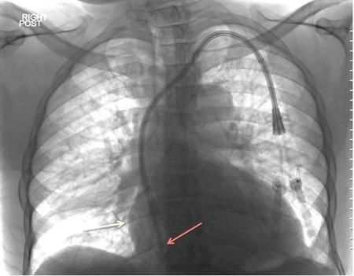
Q29
easy QID 38144
Correct
A 44-year-old female patient undergoes a right upper quadrant ultrasound due to upper abdominal pain. Which of the following is the likely diagnosis?
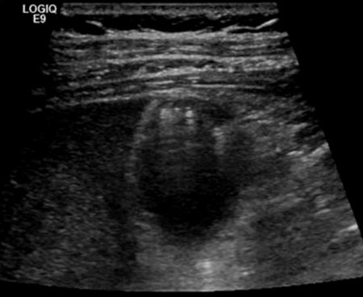
ACholelithiasis(3%)
BAcute cholecystitis(2%)
CAdenomyomatosis(94%)
DGallbladder polyp(1%)
EAdenocarcinoma(0%)
Your answerC
Correct answerC. Adenomyomatosis
Explanation
Adenomyomatosis
The image presented shows a focal mass in the gallbladder wall (red arrow) with echogenic intramural foci with associated comet tail artifacts (yellow arrows). These findings are highly specific for adenomyomatosis. Adenomyomatosis is relatively common, found in ~9% of all cholecystectomy specimens. It is typically seen in patients in their 5th decade of life. The incidence increases with age, which may be the result of chronic inflammation. There is a female predominance (M:F = 1:3). Adenomyomatosis is most often an incidental finding, has no intrinsic malignant potential, and usually requires no treatment.
Incorrect Answers:
A. Ultrasound is considered the gold standard for detecting cholelithiasis, which appears to be a highly reflective echogenic focus within gallbladder lumen, normally with prominent posterior acoustic shadowing and gravity dependent movement.
B. Acute cholecystitis is acute inflammation of the gallbladder, which is the primary complication of cholelithiasis. It is seen as mural thickening (>3mm), an obstructing gallstone, dilatation of the gallbladder, pericholecystic fat inflammation, and a positive sonographic Murphy's sign. On color Doppler imaging, small stones may demonstrate a twinkling artifact, which should not be confused with the comet tail artifact.
D. Gallbladder polyps are non-shadowing polypoid and mural-based masses that project into gallbladder lumen. They are typically immobile unless there is a relatively long pedunculated component.
E. Adenocarcinoma of the gallbladder may be seen as one of three morphologies: an intraluminal mass, diffuse mural thickening, or a mass that replaces the gallbladder.
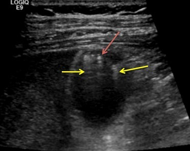
Q30
hard QID 47274
Correct
Which of the following favors a malignant over a benign etiology for thyroid nodules?
APredominantly cystic appearance(1%)
BWider than tall(2%)
CInternal flow on Doppler imaging(15%)
DPunctate echogenic foci(79%)
EHyperechoic echotexture(2%)
Your answerD
Correct answerD. Punctate echogenic foci
Vital Concept
Punctate echogenic foci carry the highest point value (3 points) in ACR TI-RADS, making them the most suspicious individual ultrasound finding for thyroid malignancy, capable of elevating otherwise low-suspicion nodules to TR4 category.
Explanation
Punctate echogenic foci
Thyroid nodules are very commonly encountered entities for radiologists. At the same time, the incidence of thyroid malignancy is low, with approximately 25,000 patients per year in the United States. The discrepancy underscores the importance of predictive factors, which can be used to guided follow-up and biopsy recommendations.
The ACR TI-RADS system is used for the management of thyroid nodules.
Incorrect Answers:
A. A predominantly cystic nodule is much less likely to be malignant vs a primarily solid nodule.
B. A nodule that is taller than it is wide has a 93% specificity for malignancy. This appearance is thought to be due to haphazard tumor growth.
C. Malignant thyroid nodules are most often hypervascular. However, this is not a specific finding. In some series, more than 50% of hypervascular solid thyroid lesions were benign.
E. Typically, malignant nodules are hypoechoic. The majority of hyperechoic nodules are benign.
Vital Concept: Punctate echogenic foci carry the highest point value (3 points) in ACR TI-RADS, making them the most suspicious individual ultrasound finding for thyroid malignancy, capable of elevating otherwise low-suspicion nodules to TR4 category.
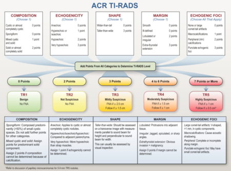
Q31
easy QID 2755
Correct
Which of the following is the most likely diagnosis?
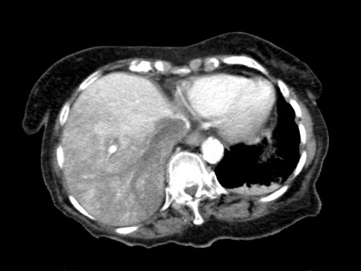
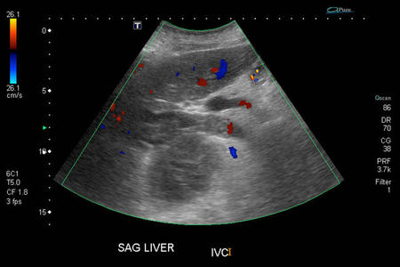
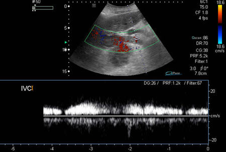
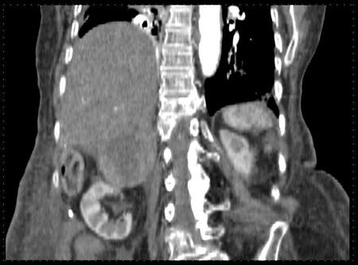
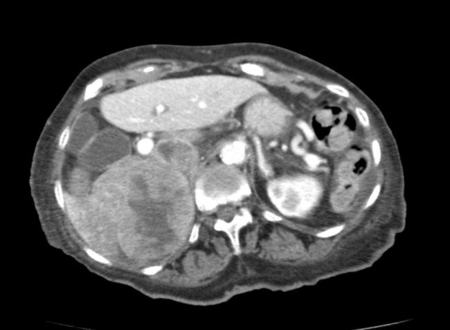
APheochromocytoma(3%)
BAdrenal cortical carcinoma(91%)
CLymphoma(1%)
DAdrenal adenoma(0%)
EAdrenal metastases(5%)
Your answerB
Correct answerB. Adrenal cortical carcinoma
Explanation
Adrenal cortical carcinoma
The images show a very large right adrenal mass (blue arrow) with central necrosis and tumor thrombus (purple arrow) invading the IVC. The ultrasound shows blood flow (pink arrow) within the clot confirming tumor thrombus. There is a perfusion abnormality in the right hepatic lobe (yellow arrow) due to hepatic vein obstruction. The venous invasion is typical of adrenal cortical carcinoma. Other tumors commonly associated with venous invasion are hepatocellular carcinoma, renal cell carcinoma, and Wilms' tumor. This lesion, however, is separate from the liver and kidney.
Incorrect Answers:
A. Pheochromocytomata are usually large, heterogeneous masses with areas of necrosis and cystic change, and they typically enhance avidly. They may wash out similar to an adrenal adenoma, but they tend to have a greater enhancement in an arterial or portal venous contrast phase. They tend to enhance more on the portal venous phase than the arterial phase. Up to 7% demonstrate areas of calcification. The venous invasion is typical of adrenal cortical carcinoma and unlikely in pheochromocytoma.
C. Primary adrenal lymphoma is rare, which in itself makes this entity much less likely than a primary adrenal cortical carcinoma. Primary adrenal lymphoma usually manifests as large, well-defined, soft-tissue masses replacing the adrenal gland with homogeneous or slightly inhomogeneous enhancement. Large tumors especially tend to infiltrate adjacent structures. The venous invasion and necrosis is typical of adrenal cortical carcinoma and unlikely in lymphoma.
D. 70% of adrenal adenomas contain significant intracellular fat. Lipid-poor adenomas are difficult to diagnose as the CT density increases and approaches that of soft tissue density. The contrast washout rate can be calculated using CT. Adenomas typically have rapid contrast washout, whereas non-adenomas tend to wash out more slowly. A 15-minute post contrast protocol is commonly used. The venous invasion is typical of adrenal cortical carcinoma and unlikely in adenomas.
E. Adrenal metastases can have variable appearances. The venous invasion and large size are typical of adrenal cortical carcinoma and unlikely in metastatic disease.
Vital concept:
Adrenal cortical carcinoma can present with extension of tumor thrombus into the IVC. Hepatocellular carcinoma, Renal cell carcinoma and Wilm's tumor can also present with extension to the IVC.
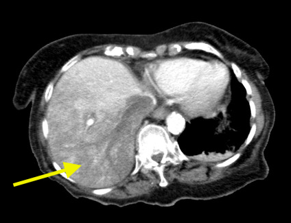
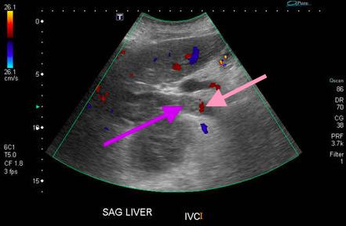
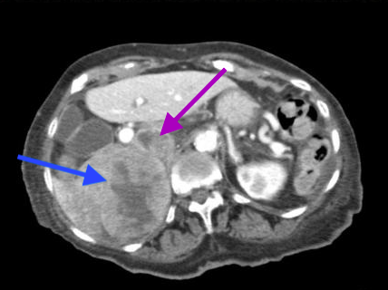
Q32
hard QID 2714
Incorrect
In prospective ECG-gated cardiac MR, which of the following components of the cardiac cycle triggers image acquisition?
AP wave(13%)
BQ wave(7%)
CR wave(74%)
DS wave(7%)
Your answerD
Correct answerC. R wave
Vital Concept
In prospective ECG-Gated cardiac MRI, data acquisition is triggered by each R-wave and is stopped after the data of the estimated number of cardiac phases has been collected. This acquisition scheme results in a small-time interval of no data collection.
Explanation
R wave
Image acquisition during prospective ECG-gated cardiac MR is triggered by the R wave. In comparison to retrospective gating, prospective ECG-gated cardiac MR only obtains images during the specifically desired segment of the cardiac cycle.
Incorrect Answers:
A, B, D: These other components of the cardiac cycle are usually not used to trigger imaging in prospective gating.
Vital Concept: In prospective ECG-Gated cardiac MRI, data acquisition is triggered by each R-wave and is stopped after the data of the estimated number of cardiac phases has been collected. This acquisition scheme results in a small-time interval of no data collection.
Q33
moderate QID 12300
Incorrect
Which cardiac valve does the marked prosthesis (arrow) replace?
AMitral(7%)
BTricuspid(86%)
CAortic(5%)
DPulmonary(1%)
Your answerA
Correct answerB. Tricuspid
Vital Concept
Cardiac valves have distinct radiographic positions: pulmonic valve is most superior in both frontal and lateral views, aortic valve is located superiorly appearing in profile frontally and anteriorly laterally, mitral valve is positioned inferiorly appearing en face frontally and in profile laterally, and tricuspid valve is most inferior appearing anteriorly on lateral view.
Explanation
Tricuspid
In this patient with Ebstein's anomaly, a prosthetic valve is noted in the right heart. Given the orientation of this valve, flow across the valve would be expected from right to left, moving blood from one part of the heart to the other. As such, this is a tricuspid valve prosthesis.
Incorrect Answers:
A. The mitral valve is in the left heart, usually slightly above the level of the tricuspid valve. Both the mitral and tricuspid valves tend to be below the aortic and pulmonary valves.
C. The aortic valve is superior to the tricuspid valve on the right side of the heart. The location and orientation of the prosthetic valve in this case is inconsistent with the aortic valve.
D. The pulmonary valve is superior to the mitral valve, usually on the left side of the heart.
Vital Concept: Cardiac valves have distinct radiographic positions: pulmonic valve is most superior in both frontal and lateral views, aortic valve is located superiorly appearing in profile frontally and anteriorly laterally, mitral valve is positioned inferiorly appearing en face frontally and in profile laterally, and tricuspid valve is most inferior appearing anteriorly on lateral view.
Q34
moderate QID 18729
Correct
A 42-year-old female patient with menorrhagia presents for uterine artery embolization. Initial aortography demonstrates a prominent vessel which is subsequently selectively injected. Embolization of this vessel is deemed necessary for full treatment of their bleeding. Which of the following is a potential complication of embolization of this vessel?
APelvic congestion syndrome(3%)
BOvarian failure(86%)
CUrinary bladder ischemia(5%)
DVulvar cutaneous necrosis(4%)
EMesenteric ischemia(2%)
Your answerB
Correct answerB. Ovarian failure
Explanation
Ovarian failure
The diagnostic angiogram shows bilateral ovarian artery enlargement and tortuosity (red arrows). Selective right ovarian artery angiogram (green arrow) shows several prominent feeding vessels leading into large uterine fibroids (blue arrow). In certain patients with fibroid uterus, additional blood may be allocated to the fibroids via an enlarged ovarian artery. Embolization of this vessel can produce ovarian failure if care is not taken to avoid non-target ovarian embolization.
Incorrect Answers:
A. Pelvic congestion syndrome is a painful syndrome which appears on angiographic images as dilated, tortuous gonadal veins with retrograde flow on venous injection. It is treated by gonadal vein embolization.
C. Non-target embolization of vesical arteries could lead to bladder ischemia. When performing selective embolization of the uterine arteries from the internal iliac vessels, care should be taken to avoid non-target embolization at this site.
D. Vulvar cutaneous ischemia could be produced by inadvertent embolization of the pudendal arteries.
E. Mesenteric ischemia would be seen in the case of inadvertent embolization of celiac, SMA, or IMA branches.
Q35
easy QID 56198
Correct
An unenhanced coronal CT section including part of the skull base is provided. Which of the following structures does the blue arrow point to?
AForamen lacerum(1%)
BVidian canal(4%)
CRostrum(2%)
DForamen rotundum(93%)
Your answerD
Correct answerD. Foramen rotundum
Vital Concept
Foramen rotundum is the most medial foramen in the greater sphenoid wing, closest to the sphenoid body.
Explanation
Foramen rotundum
The blue arrow points to the foramen rotundum. The maxillary nerve, artery of foramen rotundum and emissary veins traverse this foramen.
Incorrect Answers:
A. The foramen lacerum is not seen on this image.
B. The Vidian canal is inferomedial to the foramen rotundum on this image. The Vidian artery and Vidian nerve traverse this foramen.
C. The rostrum is the pointed bony spine extending inferiorly from the sphenoid at midline.
Vital Concept: Foramen rotundum is the most medial foramen in the greater sphenoid wing, closest to the sphenoid body.
Q36
moderate QID 20934
Correct
Images are obtained of a 53-year-old female patient with a history of bone marrow transplant and concern for veno-occlusive disease. Which of the following procedures is most likely being performed and why?
AInferior vena cava (IVC) filter placement; veno-occlusive disease suggests hypercoagulability, and filter should be placed for pulmonary embolism prophylaxis(1%)
BHepatic vein sampling; hepatic venous blood sampling should be done for the detection of abnormally elevated hepatic enzymes(6%)
CTrans-jugular hepatic biopsy; the patient is coagulopathic due to low platelets and elevated International Normalized Ratio (INR) and cannot undergo percutaneous biopsy(88%)
DHepatic chemoembolization; the patient is being treated for lymphomatous deposits via transcatheter delivery of chemotherapeutic agents(1%)
Your answerC
Correct answerC. Trans-jugular hepatic biopsy; the patient is coagulopathic due to low platelets and elevated International Normalized Ratio (INR) and cannot undergo percutaneous biopsy
Explanation
Trans-jugular hepatic biopsy; the patient is coagulopathic due to low platelets and elevated International Normalized Ratio (INR) and cannot undergo percutaneous biopsy
The catheter is positioned in the right hepatic vein (red arrow). In the setting of concern for veno-occlusive disease after marrow transplant, patients are often referred for trans-jugular hepatic biopsy for confirmation of veno-occlusive disease, as this entity can be suggested on sonographic evaluation but must be confirmed with tissue diagnosis.
If the patient’s coagulation profile is abnormal such that they are at high risk for bleeding (INR > 1.5, platelets < 50 K), the patient may undergo transjugular hepatic biopsy by cannulation of the jugular vein and intravascular passage of a biopsy needle into the hepatic parenchyma via a hepatic vein (preferably the right hepatic vein). A biopsy can then be obtained with decreased risk for severe bleeding, as any blood loss from the liver would theoretically escape into the vascular tree.
Incorrect Answers:
A. The patient is not undergoing IVC filter placement, and veno-occlusive disease itself does not increase the risk for pulmonary embolism.
B. While the patient could undergo hepatic venous blood sampling in this procedure, there is no specific indication for it related to veno-occlusive disease.
D. Hepatic chemoembolization is performed with contrast injection into the hepatic arteries, not the hepatic veins, and it is not typically undertaken for treatment of lymphoma.
Q37
QID 39299
Correct
A 42-year-old male patient presents to the emergency room with dyspnea. Further examination reveals that the patient has a pleural effusion and will require thoracentesis. Which of the following Periprocedural Care safety procedures will best reduce this patient’s risk of iatrogenic infection?
AHand washing(99%)
BInformed consent(0%)
CMedication reconciliation(0%)
DPatient identifiers(0%)
ETime-outs(1%)
Your answerA
Correct answerA. Hand washing
Vital Concept
Hand washing is a simple yet very effective way to reduce risk of iatrogenic infection.
Explanation
Hand washing
Hand washing is one of the most basic means of attaining an acceptable level of cleanliness prior to interacting with a patient. Procedures require more advanced forms of obtaining sterility, including using sterile cleanser, draping the procedure site, and using sterile protective garb. Highly invasive procedures, such as surgery, require maximum sterile barrier technique: cap, mask, sterile gown, sterile gloves, a large sterile sheet, hand hygiene, and cutaneous antisepsis.
Incorrect Answers:
B. Informed consent is the process of explaining and obtaining permission for a procedure on a patient. Informed consent includes a discussion of the potential risks and benefits of a procedure, in addition to diagnostic or therapeutic alternatives to the procedure. Patients must understand the consent process, so consent can only be obtained from patients who are fully conscious and competent to make medical decisions.
C. Medication reconciliation refers to the process of avoiding such inadvertent inconsistencies across transitions in care by reviewing the patient’s complete medication regimen at the time of admission, transfer, and discharge and comparing it with the regimen being considered for the new setting of care.
D. Patient identifiers are crucial to determining that the correct patient receives the correct therapeutic intervention, which reduces the risk of treatment errors. At least two patient identifiers are used prior to performing a procedure, and these identifiers include patient name, assigned identification number, telephone number, or person-specific identifiers (such as date of birth or government-issued photo identification).
E. Time-outs are patient safety interventions designed to ensure that all of the correct steps have been taken to ensure patient safety prior to a procedure. These steps include verification of the correct patient identity, the correct site of the procedure, and the procedure to be performed. Time-outs are conducted immediately prior to the procedure. When the location of a procedure is potentially ambiguous, the person performing the procedure marks the correct site.
Vital Concept: Hand washing is a simple yet very effective way to reduce risk of iatrogenic infection.
Q38
moderate QID 47082
Correct
Which of the following statements is most true regarding the diagnosis demonstrated in images below of this 27-year-old-male bodybuilder patient?
AThey are hormonally responsive.(55%)
BThere is no malignant potential.(7%)
CIntralesional fat and hemorrhage are uncommon findings.(2%)
DMultifocality of this entity is not seen in glycogen storage disease.(1%)
Your answerA
Correct answerA. They are hormonally responsive.
Vital Concept
Hepatocellular adenomas appearing heterogeneous on CT in patients with anabolic steroid use should raise suspicion for beta-catenin mutated subtype, which carries the highest malignant transformation risk requiring surgical resection regardless of size.
Explanation
They are hormonally responsive.
The images provided show an enlarged liver with multiple arterially hyper-enhancing masses (red arrows), some of which contain fat (yellow arrows), which on the portal venous phase maintain enhancement and have a peripheral capsule (green arrows).
These findings, coupled with the history provided (suggestive of anabolic steroid use), are most compatible with a diagnosis of hepatic adenoma. As they have a tendency to hemorrhage, and because of the theoretical low malignant transformation potential, they may be surgically excised, which will also be confirmatory of the diagnosis.
Incorrect Answers:
B. There is a theoretical low but not nonexistent malignant transformation potential.
C. As stated above, intralesional fat and hemorrhage are common findings and help support the imaging diagnosis.
D. Histologically, adenomas demonstrate the proliferation of pleomorphic hepatocytes without normal lobular architecture. These cells frequently have abundant glycogen. As such, multifocal adenomas may also be seen in glycogen storage disease.
Vital Concept: Hepatocellular adenomas appearing heterogeneous on CT in patients with anabolic steroid use should raise suspicion for beta-catenin mutated subtype, which carries the highest malignant transformation risk requiring surgical resection regardless of size.
Q39
moderate QID 43986
Correct
A 44-year-old female patient presents to the emergency department with altered mental status and severe headaches. Which of the following is the most common etiology of this process?
AVascular malformation(2%)
BHypertension(7%)
CRuptured aneurysm(91%)
DTumor(0%)
EAnticoagulation(1%)
Your answerC
Correct answerC. Ruptured aneurysm
Explanation
Ruptured aneurysm
The non-contrast enhanced CT image shows a large volume of subarachnoid hemorrhage (SAH) within the basal cisterns (red arrow), as well as a large intraventricular component (orange arrow). Patients with SAH typically present with “the worst headache of their life,” which is often accompanied by photophobia and potentially altered consciousness. Both traumatic and spontaneous etiologies exist, with the overwhelming majority (approximately 85%) of spontaneous hemorrhage secondary to a ruptured aneurysm.
Incorrect Answers:
A. D. and E. Non-traumatic causes of SAH are vascular malformation, tumors, anticoagulation, venous infarction, and cocaine use.
B. Hypertension increases one's risk for hemorrhage of existing vascular pathology but is not itself a predisposing condition.
Q40
easy QID 20610
Correct
The radiograph seen below shows findings that are commonly seen in which of the following diseases?
AKienbock's disease(1%)
BPreiser disease(0%)
CLegg-Calve-Perthes disease(99%)
DCatel–Manzke syndrome(0%)
Your answerC
Correct answerC. Legg-Calve-Perthes disease
Explanation
Legg-Calve-Perthes disease
This is a classic finding of Legg-Calve-Perthes disease (avascular necrosis of the proximal femoral head).
Incorrect Answers:
A. Kienbock’s is characterized by avascular necrosis of the lunate.
B. Preiser disease is characterized by avascular necrosis of the scaphoid.
D. Catel–Manzke syndrome is characterized by a supernumerary, irregularly-shaped bone, known as a hyperphalangy.
Q41
QID 37582
Correct
Coordinating care across multiple settings and sites is an example of which of the six core competencies of maintenance of certification?
APatient care(6%)
BMedical knowledge(0%)
CInterpersonal and communication skills(11%)
DProfessionalism(1%)
ESystems-based practice(81%)
Your answerE
Correct answerE. Systems-based practice
Vital Concept
Six core competencies of maintenance of certification (MOC) are patient care, medical knowledge, interpersonal and communication skills, professionalism, systems-based practice, practice-based learning and improvement.
Explanation
Systems-based practice
Systems-based practice is the core competency most related to coordinating care across a variety of settings. This competency requires physicians to demonstrate awareness of and responsibility to the larger healthcare context and systems, with the ability to call on system resources to provide optimal care. The document specifically defines this as including "coordinating care across sites or serving as the primary case manager when care involves multiple specialties, professions, or sites."
Incorrect Answers:
A. Patient care: Provide care that is compassionate, appropriate, and effective treatment for health problems and to promote health
B. Medical knowledge: Demonstrate knowledge about established and evolving biomedical, clinical, and cognate sciences and their application in patient care.
C. Interpersonal and communication skills: Demonstrate skills that result in effective information exchange and teaming with patients, their families, and professional associates (e.g., fostering a therapeutic relationship that is ethically sound and uses effective listening skills with nonverbal and verbal communication; working as both a team member and at times as a leader).
D. Professionalism: Demonstrate a commitment to carrying out professional responsibilities, adherence to ethical principles, and sensitivity to diverse patient populations.
Vital Concept: Six core competencies of maintenance of certification (MOC) are patient care, medical knowledge, interpersonal and communication skills, professionalism, systems-based practice, practice-based learning and improvement.
Q42
moderate QID 2923
Incorrect
Which of the following gadolinium-based contrast agents has the lowest probability of causing nephrogenic systemic fibrosis (NSF)?
AGadodiamide (Omniscan)(6%)
BGadoversetamide (OptiMARK)(2%)
CGadopentetate (Magnevist)(12%)
DGadobutrol (Gadavist)(78%)
Your answerA
Correct answerD. Gadobutrol (Gadavist)
Vital Concept
Nephrogenic systemic fibrosis occurs almost exclusively in patients with renal impairment and is associated with administration of gadolinium-based contrast agents (GBCAs) used in MRI. The stability of the gadolinium chelate is the major determinant of the risk of NSF. The most important feature of a stable chelate is a macrocyclic structure, found in gadobutrol (Gadavist).
Explanation
Gadobutrol (Gadavist)
Gadavist has lower NSF risk due to superior chelate stability that resists transmetallation, preventing the release of free toxic gadolinium ions that cause the fibrotic reactions characteristic of nephrogenic systemic fibrosis.
Incorrect Answers:
A.B.C. Gadodiamide, gadoversetamide, and gadopentetate are all linear chelates and have accounted for most cases of NSF.
Vital Concept: Nephrogenic systemic fibrosis occurs almost exclusively in patients with renal impairment and is associated with administration of gadolinium-based contrast agents (GBCAs) used in MRI. The stability of the gadolinium chelate is the major determinant of the risk of NSF. The most important feature of a stable chelate is a macrocyclic structure, found in gadobutrol (Gadavist).
Q43
easy QID 39320
Correct
A radiologist fails to keep up with the latest advances in imaging technology. Which of the following professional responsibilities has the radiologist most likely violated?
AHonesty with patients(0%)
BProfessional competence(56%)
CPatient confidentiality(0%)
DPatient relationship(0%)
Your answerB
Correct answerB. Professional competence
Explanation
Professional competence
The radiologist’s failure to stay abreast of the most recent innovations in medical imaging signifies a violation of professional competence. Professional competence involves lifelong learning and maintaining the most up-to-date medical knowledge. Professional competence also involves maintaining clinical and team skills necessary to provide quality care.
Incorrect Answers:
A. Honesty with patients is a key professional responsibility. Physicians must honestly and completely inform patients in order to ensure that patients make their best decisions in regard to medical treatment and understanding their recovery. Honesty helps empower patients to decide on their therapeutic course.
C. Respecting patient confidentiality is a key professional responsibility. Physicians must ensure that appropriate safeguards are in place to protect their patients’ personal information, especially as advancements in biotechnology increase access to a person’s demographic data and genetic information. There are situations in which patient confidentiality can be overridden, including when a patient will potentially endanger others.
D. Maintaining an appropriate relationship with patients is a key professional responsibility. Patients are vulnerable to and dependent on physicians providing their care, which should lead physicians to actively avoid taking advantage of their patients. Physicians should never seek sexual advantage, personal financial gain, or otherwise to exploit their patients.
Q44
moderate QID 4991
Correct
A 36-year-old male presents with back pain and mild radiculopathy. MRI was subsequently obtained. Which of the following is the most likely diagnosis?
AMeningioma(9%)
BMyxopapillary ependymoma(85%)
CAstrocytoma(2%)
DEpidermoid(2%)
EParaganglioma(2%)
Your answerB
Correct answerB. Myxopapillary ependymoma
Explanation
Myxopapillary ependymoma
The images show a heterogeneously enhancing mass arising from the region of the conus, which fills the canal. The most likely diagnosis is a myxopapillary ependymoma as this has many of the characteristic features. The location is the major feature, as up to 83% of conus region masses are myxopapillary ependymomas. Meningiomas, astrocytomas, and paragangliomas are very rare in this area. Also, the T2 hyperintensity relative to the cord is also a very common finding. They typically enhance and frequently hemorrhage, which is not seen in this case. They may also occasionally be slightly hyperintense on T1-weighted imaging due to mucin or hemorrhage. Epidermoids related to prior lumbar puncture are reasonably common in this area but are typically of near CSF intensity on T2-weighted imaging and should not enhance internally.
Q45
easy QID 24111
Correct
Which of the following is the likely history of this patient?
ATrauma(95%)
BPainless mass(2%)
CBreastfeeding(2%)
DStatus post-lumpectomy and radiation therapy(1%)
EStatus post-biopsy(1%)
Your answerA
Correct answerA. Trauma
Vital Concept
Oil cysts are round radiolucent masses on mammography indicating benign fat necrosis, but irregular rim calcification or collapse can contribute to suspicious appearances requiring biopsy.
Explanation
Trauma
The calcifications shown are classical for rim or eggshell calcifications (yellow arrows). They are benign calcifications that appear as calcium deposited on the surface of a sphere. These occur in oil cysts and fat necrosis, and are often the sequelae of trauma, which the patient may or may not be aware of. When this is suggested to the patient, they can usually retrospectively recount a traumatic event.
Incorrect Answers:
B. A painless mass such as invasive ductal carcinoma or lobular carcinoma in situ may mimic fat necrosis if densely fibrotic or inflammatory. In these cases, review of prior imaging for evolution of fat necrosis changes is crucial, as is ruling out a history of trauma. The calcifications in these cancers are almost always of a more suspicious morphology and distribution.
C. Patients who are breastfeeding may get galactoceles, a fat-containing, well-circumscribed mass which may demonstrate fat-fluid levels. These typically do NOT calcify.
D and E. Fat necrosis can also be seen in the setting of prior breast cancer treatment, typically with coarse and dystrophic calcifications also present. Further, if there were a history of lumpectomy and radiation therapy, one would expect to see post-surgical changes including skin retraction, skin thickening, and architectural distortion.
Vital Concept: Oil cysts are round radiolucent masses on mammography indicating benign fat necrosis, but irregular rim calcification or collapse can contribute to suspicious appearances requiring biopsy.
Q46
hard QID 4988
Correct
The following MRI was obtained in a patient undergoing workup for visual disturbance. Lab work-up revealed elevated calcium and parathyroid hormone levels. Which of the following is the likeliest inheritance pattern of the patient's condition?
Multiple endocrine neoplasia type 1 (MEN1), also known as Wermer syndrome, is an autosomal dominant genetic disease that results in proliferative lesions in multiple endocrine organs, particularly the pituitary gland, islet cells of the pancreas and parathyroid glands.
Explanation
Autosomal dominant genetic disorder
This constellation of findings suggests MEN 1 syndrome with pituitary macroadenoma and primary hyperparathyroidism. MEN 1 follows autosomal dominant inheritance with the gene locus on chromosome 11, meaning each offspring of an affected parent has a 50% chance of inheriting the mutation because only one copy of the mutated gene is needed to cause disease. The large heterogeneous sellar mass on MRI represents a pituitary macroadenoma, which typically appears isointense to gray matter on T1-weighted images with heterogeneous enhancement and is most commonly a prolactinoma in MEN 1 patients. Elevated calcium and parathyroid hormone (PTH) levels are consistent with primary hyperparathyroidism. Primary hyperparathyroidism is the most common and earliest manifestation of MEN 1, occurring in over 90% of patients as part of the classic triad that includes pituitary adenomas and pancreatic neuroendocrine tumors.
Incorrect Answers:
B.C.D. The diagnosis is MEN Type 1 and it is autosomal dominant in inheritance.
Vital Concept: Multiple endocrine neoplasia type 1 (MEN1), also known as Wermer syndrome, is an autosomal dominant genetic disease that results in proliferative lesions in multiple endocrine organs, particularly the pituitary gland, islet cells of the pancreas and parathyroid glands.
Q47
hard QID 5065
Correct
A 47-year-old previously healthy male presents with cough and fever. A chest x-ray (not shown) was obtained to evaluate for pneumonia and an incidental finding prompted the following computed tomography (CT) scan. There is no interarterial course of the right coronary artery. Which of the following is the next best step for definitive diagnosis?
AEvaluate the hemodynamic significance with magnetic resonance imaging (MRI) without contrast.(61%)
BEndovascular stent-graft placement.(7%)
CEmergent cardiovascular surgery.(3%)
DElective outpatient cardiovascular surgery.(23%)
EAntibiotic therapy and close follow-up.(6%)
Your answerA
Correct answerA. Evaluate the hemodynamic significance with magnetic resonance imaging (MRI) without contrast.
Vital Concept
With phase contrast imaging, MRI is a viable modality to assess hemodynamic significance of aortic pseudocoarctation.
Explanation
Evaluate the hemodynamic significance with magnetic resonance imaging (MRI) without contrast.
The sagittal reformatted image of the aorta shows an apparent narrowing of the distal aortic arch at the level of the isthmus. This is a typical location for aortic coarctation.
The differential diagnosis for coarctation is a "pseudo-coarctation," which is a strong possibility given the patient's age and lack of symptoms. Pseudo-coarctation is typically an incidental finding provided there is no accompanying aneurysm.
The evaluation of both coarctation and pseudo-coarctation has traditionally been with a catheter angiogram. A pressure gradient across the stenosis of > 20 mmHg was indicative of hemodynamically significant coarctation and the threshold for treatment.
Phase-contrast magnetic resonance imaging (MRI) without intravenous (IV) contrast has begun to replace angiography and can be used for diagnosis and follow-up. Using the Bernoulli equation, pressure gradients can be calculated from flow velocity. MRI also has the advantage of being able to quantify collateral flow by measuring flow in the distal arch and comparing it to flow at the diaphragmatic hiatus. Therefore, the next best step is MRI to evaluate for hemodynamically significant coarctation versus pseudo-coarctation. Angiography would also be reasonable but is not listed as a choice.
Incorrect Answers:
B. Use of endovascular stent-grafts is recommended for the treatment of coarctation, in particular when combined with the following conditions: patent ductus arteriosus, Takayasu arteritis, very tight stenoses, aneurysms, marked tortuosity of the aorta, and cases associated with a high risk of aneurysm formation or development of dissection.
C. D. Coarctation is a congenital heart defect with an incidence of 5% to 8%, more frequent in boys and in the setting of pregestational diabetes; tight control of blood sugar during pregnancy may therefore reduce overall risk. The overwhelming majority of patients undergo surgery early. Currently, the treatment of choice in adolescents and adults is endovascular management.
E. There is no indication for the sole use of antibiotic therapy in this instance.
Vital Concept: With phase contrast imaging, MRI is a viable modality to assess hemodynamic significance of aortic pseudocoarctation.
Q48
moderate QID 24113
Correct
A 34-year-old patient presents with a palpable lump in the upper outer quadrant of the right breast, 5 cm from the nipple. They undergo a diagnostic mammogram, which is normal, followed by the ultrasound shown below. How would the provider report this lesion?
ABIRADS 0(1%)
BBIRADS 1(3%)
CBIRADS 2(89%)
DBIRADS 3(2%)
EBIRADS 4(4%)
FBIRADS 5(1%)
Your answerC
Correct answerC. BIRADS 2
Vital Concept
Epidermal inclusion cysts appear as well-circumscribed hypoechoic masses in subcutaneous tissue with posterior acoustic enhancement, internal echogenic debris from keratin contents, and characteristic connection to skin surface (punctum), remaining avascular on Doppler imaging.
Explanation
BIRADS 2
Correct Answer:
C. BI-RADS 2.
The ultrasound image shows a tiny, 3mm, circumscribed and hypoechoic mass (blue arrow) that is located in the echogenic skin layer (purple arrows). This is above the interface between the dermis and subcutaneous tissues (yellow arrow). This is a skin lesion and thus a benign entity, most likely an epidermal inclusion cyst. As such, it should be reported as a BI-RADS 2.
Incorrect Answers:
A. BI-RADS 0 is used for findings that need additional imaging evaluation and/or prior mammograms for comparison.
B. BI-RADS 1 is reserved for normal findings or a negative exam with nothing to comment on. While benign, a benign cyst is not considered normal.
D. BI-RADS 3 indicates a probable benign finding for which short interval follow-up is recommended. This should have a less than 2% chance of malignancy.
E. BI-RADS 4 indicates a suspicious finding for which biopsy should be considered. This is a broad category that spans from 2-95% chance of malignancy. This is further broken down into categories 4A, 4B, and 4C.
F. BI-RADS 5 is reserved for findings that are highly suggestive of malignancy (>95% change) for which actions should be taken.
Vital Concept: Epidermal inclusion cysts appear as well-circumscribed hypoechoic masses in subcutaneous tissue with posterior acoustic enhancement, internal echogenic debris from keratin contents, and characteristic connection to skin surface (punctum), remaining avascular on Doppler imaging.
Q49
hard QID 4947
Incorrect
In a patient who has left bundle branch block, which of the following methods of stress would be best for a myocardial perfusion study?
AAerobic exercise(17%)
BDobutamine(15%)
CArbutamine(0%)
DRegadenoson(66%)
ETheophylline(2%)
Your answerB
Correct answerD. Regadenoson
Vital Concept
Vasodilator stress testing (regadenoson, adenosine, or dipyridamole) with nuclear perfusion imaging is optimal for left bundle branch block patients because exercise worsens abnormal septal wall motion and creates false-positive septal perfusion defects due to abnormal electrical activation.
Explanation
Regadenoson
Normal coronary perfusion takes place in diastole when reverse flow in the aorta enters the coronaries and the myocardial tissue is relaxed. In patients with left bundle branch block, there is asynchronous contraction of the septal wall resulting in contracted myocardium during the typical diastolic filling phase. This results in an artifactual perfusion defect of the septum. The optimal regimen in a patient with left bundle branch block is adenosine, regadenoson, or dipyridamole, which cause preferential vasodilation without significant inotropic effect.
Incorrect Answers:
A, B, and C. When the cardiac cycle is shortened (i.e., accelerated heart rate), diastole is shortened. This results in a worsening of the perfusion defect. Therefore, exercise and positive inotropic agents (arbutamine and dobutamine) should be avoided.
E. Theophylline is a reversal agent for adenosine and dipyridamole. It is not used for inducing stress.
Vital Concept: Vasodilator stress testing (regadenoson, adenosine, or dipyridamole) with nuclear perfusion imaging is optimal for left bundle branch block patients because exercise worsens abnormal septal wall motion and creates false-positive septal perfusion defects due to abnormal electrical activation.
Q50
QID 22424
Incorrect
A 32-year-old female patient presents with recurrent left lower extremity deep venous thrombosis. Which of the following is the most appropriate treatment?
ASystemic anticoagulation alone(4%)
BCatheter-directed thrombolysis(9%)
CCatheter-directed thrombolysis (CDT) followed by self-expandable stent(70%)
DBalloon-expandable stent(14%)
ESurgical patch venoplasty(3%)
Your answerD
Correct answerC. Catheter-directed thrombolysis (CDT) followed by self-expandable stent
Vital Concept
Treatment requires catheter-directed thrombolysis to dissolve acute clot and stenting to address underlying mechanical compression. IVC filter is commonly placed for embolic protection, followed by its retrieval after successful treatment. Stenting treats the anatomic problem while thrombolysis addresses the thrombotic component.
Explanation
Catheter-directed thrombolysis (CDT) followed by self-expandable stent
The venogram shows filling defects within the left common iliac vein (blue arrow), which reflect a combination of thrombosis and stenosis.
The patient is presenting with May-Thurner syndrome, which is due to chronic anatomic compression of the left common iliac vein by the crossing right common iliac artery. It is most commonly treated with angioplasty and stent placement after the intraluminal thrombus has been cleared with catheter-directed thrombolysis.
Self-expandable stents are more useful in the venous system, as they enable the operator to cover long distances, can be easily re-sheathed if they need to be repositioned, and are durable enough for use in this setting. Balloon-expandable stents may be used if the response to the self-expandable stent is not sufficient, though venous systems are not as amenable to the use of balloon-expandable stents.
Incorrect Answers:
A. While systemic anticoagulation will be necessary in the acute setting after stent placement, alone, it is usually not sufficient for the treatment of May-Thurner syndrome.
B. Catheter-directed thrombolysis may be needed for removal of venous thrombus. However, stent placement will be needed for the prevention of future clot development.
D. Balloon-expandable stents are not first-line therapy for the reasons described above.
E. Surgical patch venoplasty may be performed for treatment of these lesions. However, it is not considered first-line therapy, as endovascular techniques have become the preferred method.
Vital Concept: Treatment requires catheter-directed thrombolysis to dissolve acute clot and stenting to address underlying mechanical compression. IVC filter is commonly placed for embolic protection, followed by its retrieval after successful treatment. Stenting treats the anatomic problem while thrombolysis addresses the thrombotic component.